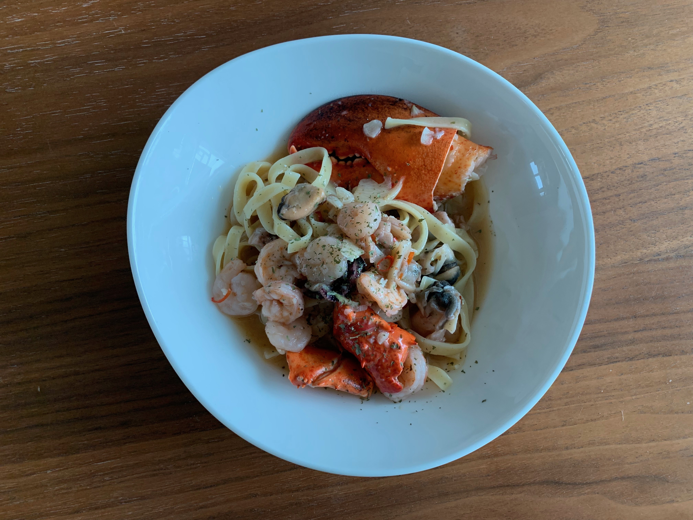

- ART WORK
- COOKING
- SOY BEAN's LIFE
LOBSTER PASTA
LOBSTER PASTA
LOBSTER PASTA
LOBSTER PASTA
EASY and DELICIOUS
코스트 코에서 산 냉동 해물모듬, 냉동 랍스터, 파스타 면 (링귀니,페투치네), 시중 봉골레 소스, 올리브오일, 마늘10알~, 파슬리, 페퍼론치노, 소금
파스타는 정말로 만들기 쉬운 음식이다. 면 요리를 먹고싶지만 건강한것
을 먹고 싶을때 그리고 포만감을 느끼고 싶을때, 나는 단백질과 마늘을 듬뿍넣은 파스타를
만들어 먹는다. 듀럼밀로 만들어진 파스타 면은 일반 밀가루보다 gi지수가 낮다고 한다.
소금을 아빠숟가락 만큼 넣은 물을 냄비에 끓인다. 물이 끓으면 면을 넣는다. 타이머는 7분을 맞춘다. 그동안 다른 스테인레스 팬에는 올리브오일을 듬뿍 넣고 냉동 랍스터와
해물을 넣고 물을 약간 넣고 뚜껑을 닫는다. 해물이 녹는거 같 으면 편을 썬 마늘들과 페퍼론치노를 3개 정도 넣는다. 마늘과 해산물을 넣고 볶다가
면을 넣고 함께 저으면 된다. 그 위에 파슬리를 뿌리면 완성.
